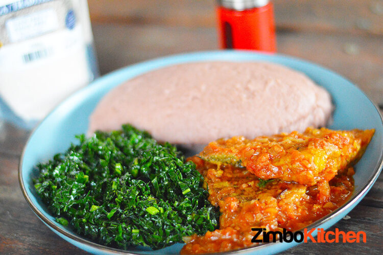

Brown Sadza and Chicken

Delicious Mupunga (Brown Rice) Sadza
Desription
If you love traditional brown rice, then you will most certainly enjoy this Sadza. It’s basically ground up traditional brown rice which you can then use to prepare the Sadza, yum! The best part of it is that it is also highly nutritional, which is a plus!
Details
- Servings - 4 to 5 people
- Prep time - 5 minutes
- Cooking time - 30 minutes
Ingredients
- 225g of brown rice
- 100ml cold water
- 750ml boiling water
What to do
- Get your ingredients together. Put 125 g of mupunga in a pot. Add the cold water, and stir until you have a smooth paste.
- Put on high heat and add the boiling water whilst stirring simultaneously. Continue stirring until it begins to boil (kukwata). Reduce heat to medium high and allow it to continue boiling for 15 minutes whilst partly covered.
- After 15 minutes, add the remaining mupunga bit by bit, mixing well (kumona) after each addition, breaking any lumps that may form.
- Close pot and reduce the heat further to low, and allow this to simmer (kushinyira) for 5 minutes. Enjoy!